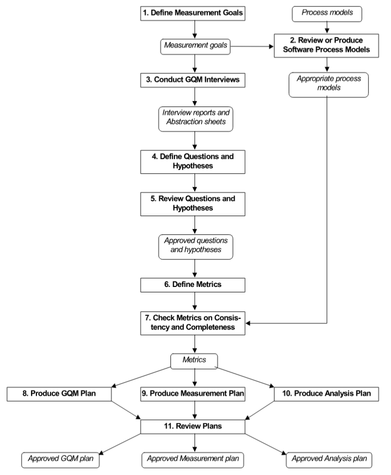
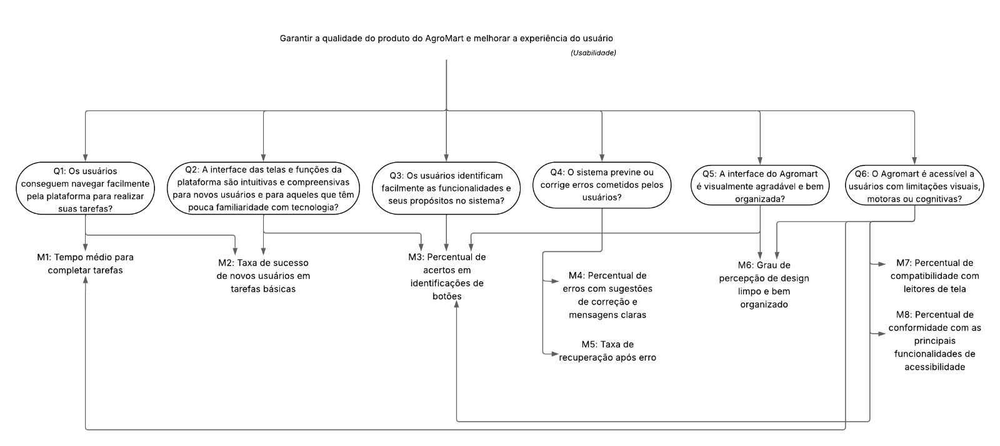
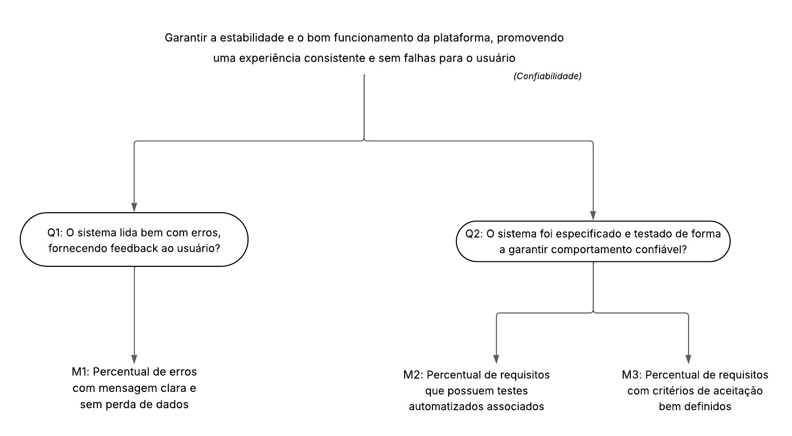

Aplicação da Metodologia GQM
A equipe seguiu as oito primeiras fases da metodologia GQM (Goal-Question-Metric) para estruturar a avaliação da plataforma AgroMart.
Inicialmente, foram definidos os objetivos de medição, com foco em usabilidade e confiabilidade. Em seguida, revisou-se o contexto do sistema e realizaram-se discussões em grupo para a elaboração dos abstraction sheets, o que permitiu a definição colaborativa de perguntas e hipóteses alinhadas aos objetivos propostos.
As questões levantadas foram refinadas e vinculadas a métricas específicas, que passaram por revisão quanto à consistência e completude. Por fim, foi elaborado o plano GQM, consolidando todos os elementos definidos.
Figura 1 - Definição de procedimentos GQM

Fonte: Retirado de Basili et al. [1]
Objetivo de Negócio do AgroMart
O objetivo de negócio do AGROMART é desenvolver um software inovador que estabeleça uma conexão direta entre agricultores e consumidores, especialmente em resposta aos desafios impostos pelo isolamento social durante a pandemia da COVID-19. A plataforma tem como foco principal facilitar e fortalecer a comercialização de produtos agroecológicos, promovendo o acesso direto ao mercado para pequenos produtores rurais.
O AGROMART funciona como uma ferramenta digital de apoio à criação e à gestão de Comunidades que Sustentam a Agricultura (CSAs), permitindo que os produtores organizem entregas, compartilhem informações sobre os produtos e se comuniquem diretamente com os consumidores e com as comunidades envolvidas. Além disso, a plataforma visa melhorar a gestão e o engajamento entre agricultores e administradores das CSAs, por meio de um sistema acessível, estável e adaptado às necessidades específicas de ambos os perfis.
O projeto busca enfrentar desafios recorrentes no meio rural, como a dificuldade de inserção no mercado formal e a dependência de intermediários, que muitas vezes reduzem a margem de lucro do produtor. Para isso, o AGROMART oferece funcionalidades como cadastro de usuários, listagem e pedido de produtos, gestão de entregas e apoio à formação de grupos de consumo consciente.
Objetivo de Medição 1: Usabilidade
| Analisar | o AgroMart |
| Para o propósito de | entender |
| Com respeito a | usabilidade |
| Do ponto de vista da | equipe de desenvolvimento |
| No contexto da | disciplina |
Objetivo de Medição 2: Confiabilidade
| Analisar | o AgroMart |
| Para o propósito de | entender |
| Com respeito a | confiabilidade |
| Do ponto de vista da | equipe de desenvolvimento |
| No contexto da | disciplina |
Questões Objetivo de Medição 1: Usabilidade
Q1: Os usuários conseguem navegar facilmente pela plataforma para realizar suas tarefas?
Hipótese 1: A maioria dos usuários consegue completar suas tarefas sem dificuldades significativas.Q2: A interface das telas e funções da plataforma são intuitivas e compreensivas para novos usuários?
Hipótese 2: Novos usuários e usuários com baixa familiaridade com a tecnologia, conseguem entender e utilizar a plataforma com mínima orientação.Q3: Os usuários identificam facilmente as funcionalidades e seus propósitos no sistema?
Hipótese 3: Mais de 85% dos usuários compreendem os ícones e botões sem a necessidade de ajuda externa ou tutorial.Q4: O sistema previne ou corrige erros cometidos pelos usuários?
Hipótese 4: O Agromart oferece mensagens claras e opções de correção em mais de 90% dos erros detectados.Q5: A interface do Agromart é visualmente agradável e bem organizada?
Hipótese 5: Mais de 90% dos usuários avaliam a estética como organizadas, cores agradáveis e hierarquia visual.Q6: O Agromart é acessível a usuários com limitações visuais, motoras ou cognitivas?
Hipótese 6: O sistema é compatível com leitores de tela e possui contraste adequado em mais de 95% das telas avaliadas.
Questões Objetivo de Medição 2: Confiabilidade
Q1: O sistema lida bem com erros, fornecendo feedback ao usuário?
Hipótese 1: O sistema possui, pelo menos 85% dos erros explicados de forma clara, e indica como solucioná-los.Q2: O sistema foi especificado e testado de forma a garantir comportamento confiável? Hipótese 2: Pelo menos 80% dos requisitos funcionais possuem critérios de aceitação claros e testes automatizados.
Relação entre Objetivos de Medição - Questões e Métricas - Objetivo de Medição 1: Usabilidade
Figura 2 - Questões e Métricas - Usabilidade

Relação entre Objetivos de Medição - Questões e Métricas - Objetivo de Medição 2: Confiabilidade
Figura 3 - Questões e Métricas - Confiabilidade

Seleção das Métricas
Com base na abordagem Goal-Question-Metric (GQM), selecionamos as seguintes métricas para a avaliação:
Confiabilidade
- M1: Percentual de erros com mensagens claras e sem perda de dados
- M2: Percentual de requisitos que possuem testes automatizados associados
- M3: Percentual de requisitos com critérios de aceitação bem definidos
Usabilidade
- M1: Tempo médio para completar tarefas
- M2: Taxa de sucesso de novos usuários em tarefas básicas
- M3: Percentual de acertos na identificação de botões
- M4: Percentual de erros com sugestões de correção e mensagens claras
- M5: Taxa de recuperação após erro
- M6: Grau de percepção de design limpo e bem organizado
- M7: Percentual de compatibilidade com leitores de tela
- M8: Percentual de conformidade com as principais funcionalidades de acessibilidade
Níveis de Pontuação das Métricas
Para cada métrica definida por meio da abordagem GQM, foram estabelecidos níveis de pontuação que permitem interpretar os resultados de maneira padronizada, facilitando comparações e decisões. Esses níveis foram definidos com base em referências da literatura, expectativas do público-alvo e boas práticas de avaliação.
A seguir, apresenta-se a escala de pontuação definida pela equipe:
| Desempenho da Métrica | Faixa de Valores | Interpretação Qualitativa |
|---|---|---|
| Excelente | 10 | Atende plenamente às expectativas de qualidade. |
| Bom | 7 - 9 | Atende de forma satisfatória, com pequenas oportunidades de melhoria. |
| Regular | 4 - 6 | Apresenta deficiências perceptíveis, mas ainda pode ser considerado utilizável. |
| Insatisfatório | 1 - 3 | Compromete significativamente a experiência e/ou confiança do usuário. |
Critérios para Julgamento
Com base nas métricas e níveis de pontuação definidos, foram estabelecidos critérios de julgamento para interpretar os resultados da avaliação e apoiar a tomada de decisões quanto à qualidade da aplicação.
Os critérios são organizados por característica (usabilidade e confiabilidade) e baseiam-se na média de desempenho das métricas associadas a cada uma delas:
Critérios para Usabilidade
-
Aceitável: ≥ 70% das métricas classificadas como "Bom" ou "Excelente".
-
Parcialmente aceitável: Entre 40% e 69% das métricas com nível "Regular" ou superior.
-
Inaceitável: > 30% das métricas atingindo "Ruim" ou "Insatisfatório".
Critérios para Confiabilidade
-
Aceitável: ≥ 70% das métricas classificadas como "Bom" ou "Excelente".
-
Parcialmente aceitável: Entre 40% e 69% das métricas com nível "Regular" ou superior.
-
Inaceitável: > 30% das métricas atingindo "Ruim" ou "Insatisfatório".
Bibliografia
- ISO/IEC 25010:2011. Disponível em: https://iso25000.com/index.php/en/iso-25000-standards/iso-25010. Acesso em: 02 de junho de 2025.
- WORLD WIDE WEB CONSORTIUM. Web Content Accessibility Guidelines (WCAG) 2.1. Disponível em: https://www.w3.org/TR/WCAG21/. Acesso em: 02 de junho de 2025.
Referências Bibliográficas
[1] BASILI, Victor R.; CALDIERA, Gianluigi; ROMBACH, Hans Dieter. The Goal Question Metric (GQM) Approach. In: MARCINIAK, J. J. (ed.). Encyclopedia of Software Engineering. New York: John Wiley & Sons, 1994. cap. 6, p. 50. Ilust. (Figura 6-2).
Tabela de Contribuição
| Matrícula | Nome completo | Contribuição (%) |
|---|---|---|
| 221007798 | Ana Júlia Mendes Santos | 20 |
| 221022355 | Júlia Rocha Fortunato | 20 |
| 221008338 | Maria Clara Oleari de Araujo | 13,3 |
| 222007021 | Maurício Ferreira de Araújo | 13,3 |
| 222006356 | Pedro Lock Martins | 13,3 |
| 221022767 | Weverton Rodrigues da Costa Silva | 20 |
Historico de Versões
| Versão | Data | Descrição | Autor | Revisor |
|---|---|---|---|---|
1.0 |
22/05/2025 | Criação do documento | Weverton Rodrigues | Júlia Fortunato |
1.1 |
27/06/2025 | Atualização do documento | Ana Júlia | Weverton Rodrigues |
1.2 |
07/07/2025 | Atualização de métricas e textos do documento | Júlia Fortunato | Maurício Ferreira |